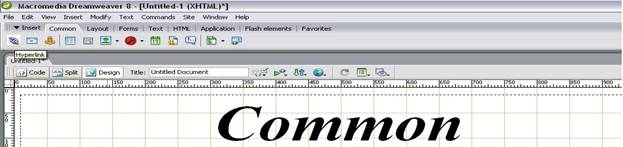
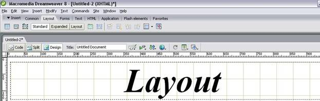
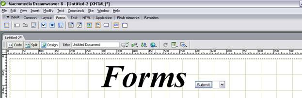
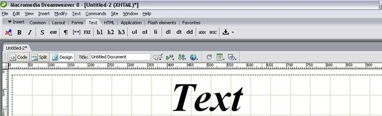
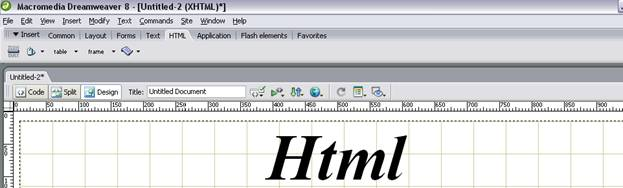
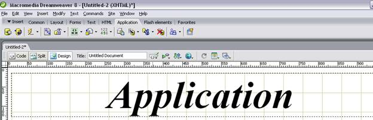

Amaliy ish №8 .
Macromedia Dreamweaver дастурининг дастур тили ва теглари HTML коди ва JavaScript тиллари буйруқ ва теглари билан бир хил. Dreamweaver дастурини бошқа Web саҳифа яратувчи дастурлардан қулай томони бир вақтда Photoshop, Flash, Fireworks,Word дастурлари билан фойдаоаниш имконияти катта. Мисол учун Flash дастурида яратилган анимацияни қуйдагича сахифага жойлаштириш мумкин. Dreamweaver дастурини Insert менюсини Common қаторининг Flash компанентаси босилади.Иловаларини яратишда Macromedia Dreamweaver дастуридан кенг фойдаланилади. Macromedia Dreamweaver дастурини ишга тушириш учун ПУСК дастурлар қаторидан Macromedia Dreamweaver дастури танланади. Dreamweaverнинг ишчи ойнаси очилади.

Layout – бу бўлимда таблицалар билан ишлаш Frem лар билан ишлаш имкониятлари мавжуд.

Forms – бу бўлимда Formаlar билан ишлаш Internet даги мураккаб жараёнларни бажариш имконияти мавжуд. Мисол учун матни яшириш сўровли ҳолатларни яратиш яъни рейтинг тизимларини хосил қилиш.

Text - бу бўлимда матнлар билан ишлаш имконияти мавжуд. Матнларни ҳар ҳил шрифтда ёзиш, абзаслар қўйиш ва хоказо ишларни амалга ошириш мумкин.

Html – бу бўлимда Html теглардан фойдаланиш имконияти мавжуд.

Application – бўлимда қўшимча иловалар билан ишлаш икониятини яратади.

DreamWeaver дастурида қилинган ишни Internet да кўриш учун F12 тугмасидан фойдаланилади.